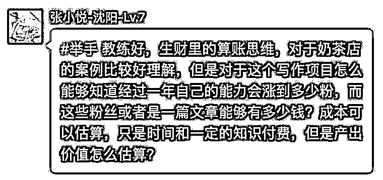
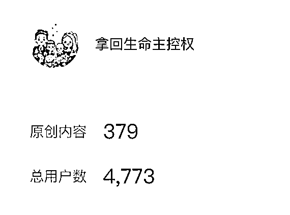

来源：https://oee5lr7gsk.feishu.cn/docx/RCM3dItXaoh6DOxDgJNcw0Gpn1e
全文共：2,590 字
预计阅读时间：3.15 分钟
圈友们好，我是根源
也是这一次生财思维航海的教练
这篇文章的背景，源自于这次的生财思维航海
当聊到『算帐思维』时，有一位船员提出了这样的问题。
船员提到了：
如果开一个奶茶店，我确实能用算帐思维计算成本、产出、....。
但如果我的项目是写作，我应该把算帐思维应用上我的项目？
我觉得对于「算账思维」的这部分解释
是一个更细致更全面地诠释
算账思维的核心，一定不是只看「钱」，
因为「钱」只是其中一个结果，如果只看「钱」，就容易把项目看得片面
这个过程中应该要更全面的评估的是
自己有什么，能调动多少资源，哪些资源可以帮我创收……
在这篇文章中，我有非常细致的说明
如果你也正想透过写作变现
希望这些经验或方法，能帮到正在看文章的圈友
很欢迎看完文章后
能一起讨论。

其实，算帐思维，有时候算的不一定是钱
还有时间、还有你手上拥有多少筹码
就以你的情况来说
我不会这么快的计算每一篇文章写好后，可以有多少产出比。
因为，这样的思考太片面
有时候，你会发现小明写的文章，跟小源写的文章相比，明明小源写的更好
但为什么小明的赞赏更多，阅读数更高？
因为小明，他在互联网的声望比小源要高太多了
就算小明抄的是小源的，多数人都会直接认定，肯定是小源抄小明的文章
这时候要算的第一笔帐
就应该是你除了写文章之外，还做了些什么？
你除了文章之外，还有什么是辅助这个文章，可以变现的渠道？
最直接的就是：你是否有课？
我就谈我的例子
2022年初，我第一次更新公众号，当时，明白老师跟我说必须要更新公众号
我当时写公众号，根本就不是为了变现
因为我知道，我在互联网上根本没有任何的『踪迹』
也就是，別人根本不知道，我到底是个有能力的人，又或者是，我就是个骗子。
那什么叫做『踪迹』？
类似这些：
小红书粉丝量
视频号关注人数
公众号关注人数
有多少篇十万加的文章
生财的精华帖有几篇
有多少付费的微信群，能否证明
............
如果谈一些更大的，就是某个平台的多数会员能不能听到这名字就说：“这老师不错。”
这些都属于你的互联网『踪迹』
那你的『踪迹』是什么？绝对不能只有文章。
假设你单纯只是写文章，你会发现初期根本就得不到关注，甚至埋头苦干写两年，依旧不会得到关注
因为，你第一笔要算的帐，是除了写文章之外，你还拥有些什么？
就像2022年，我拥有：
1、一个关注不到100人的，新创立的公众号
2、有一堂131.4元的付费沟通课（大概400人左右）
3、我用了一年的时间，让我的通讯录里面，增加了将近700人的生财好友
4、我认识明白老师、陈雪、刺猬、涛哥、靠谱、大周、西门......跟这些人的关系都挺好
...........
这是我当时算的帐，这笔账当算清楚之后，我就能知道
当我要推一个东西，能获得多少协助
我用一年的时间，认真地盘活我手边拥有的这些东西，可以帮我自己创造点什么
这时候，我都还没计算可能获得多少营收
因为我知道得有些好的数据
这些是一个大多数人可以查询到的数据，这也是我上面提到的『踪迹』。

两年半的时间，我第一年文章写的最勤劳，
但是到了目前我一共也才写了379篇原创，赞赏大概两万多，总用户根本不到5000人。
我第一年，其实公众号的关注人数才3000人不到
但是第一年，我算过透过公众号对我付费的总金额，已经超过100w以上。
也就是，我公众号的目的只有一个
让我在互联网上可以有拿查询到的『踪迹』
因为我不只有文章，我还有自己的课，我还有上过课的学员.......
所以，目前对于你的问题来说
要算的帐，不是『钱』的帐，而是你手边拥有哪些东西能帮你创收
这些都是第一阶段，你必须要算出的帐
当这些算出来后，才进入到第二阶段，你要如何，可以盘活手上的这些资源
就假设你有自己的课，你写一篇文章之后，有多少人阅读、得到多少转化。
以及，同样一篇文章，你除了发公众号之外，会不会发到其他平台
就类似小红书
就类似视频号
就类似你自己的私域群里面
……
也就是，
这才是算帐思维的应用，因为算帐，不能只算名面上的『赚多少钱』。
收入的背后，都来自很多复杂的系统
当这些小系统，每个都很完善的时候，你才能开始拥有稳定的收入。
我是根源，同时也是第四期的生财圈友
一个有 2w+ 实战案例的心理咨询师
12年线下销售、团队管理经验。
2022 年开始转型线上，做一些知识付费的项目。
过去曾发表过几篇文章
都能看到这，代表你对文章的喜爱
肯定有一定的程度！
也欢迎阅读过去我写过的历史文章。
2021年的文章（精华x1）
2022年的文章
2023年的文章（精华x6）
2024年的文章（精华x3）
多亏加入了生财有术
让我少走了很多弯路。
也积累了一些经验、心得
如果圈友有什么需要探讨的
欢迎加我微信「 AF54094 」交流~
▲
也能扫码撩我~